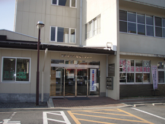

社会福祉協議会（略称 社協）ってなに？
「社協」って知っていますか？ 社協とは、「社会福祉協議会」 を略した呼びかたです。
社協は、社会福祉法109条に基づいて組織された民間の福祉団体で、市民の皆さまやボランティア、行政や関係団体・専門機関の参加・協力を得ながら活動することを特長としています。
また、民間組織としての「自主性」と、地域の皆さまやさまざまな分野の関係者に支えられた「公共性」という２つの側面を合わせ持っています。
茅野市社協では、市民皆さま一人ひとりが主体となって、地域のなかの“困ったなぁ”“どうしよう”という声にみんなで考え、話し合い、保健・医療・福祉などの関係者や行政機関の協力を得ながら、「誰もが安心して住み慣れた地域で心豊かに暮らせるまちづくり」を目指して、柔軟に福祉活動や事業を推進していきます。
社協の組織や構成は？
茅野市社協の運営にあたる理事・評議員は、地区社協会長、区長、民生児童委員協議会、地域団体・福祉団体の代表者、ボランティア、福祉施設、行政、学識経験者等で組織されています。
茅野市社協は、茅野市内の各10地区の小地域単位にある地区社会福祉協議会（略称 地区社協）、区・自治会、福祉推進委員、ボランティア、保健・医療・福祉などの団体、行政、そして地域で暮らす市民の皆さんで構成されており、共に連携・協働しながら地域福祉の推進を図っています。
社協のしくみ構成図については・・こちら
社協の財源は？
茅野市社協を支える財源は、みなさまからご協力いただいている社協会費や寄付金が基盤となっています。そのほかに共同募金の配分金、市からの補助金、移送サービス事業、配食サービス事業等受託事業による受託金、そして独自事業収入（介護保険・障害者自立支援事業）等の財源で運営されています。
どんな活動をしているんだろう？
茅野市社協では、主に 住民主体による地域福祉活動の推進、ボランティア・市民活動の推進・支援、福祉教育や啓発活動、地区社協の支援、生活支援のための福祉サービスなど地域福祉活動に関することを幅広く行っています。
また、介護保険事業者として居宅介護支援事業所、訪問介護事業所、デイサービスセンターも行なっています。
『社協』の活動の源は、『住民のみなさんの声（意見）』です。そんな皆さんの声を大切にし、応えていけるよう頑張っています。
活動の内容は、各コンテンツページに詳しく紹介してありますので、ぜひそちらをご覧下さい。

 茅野市社会福祉協議会
茅野市社会福祉協議会